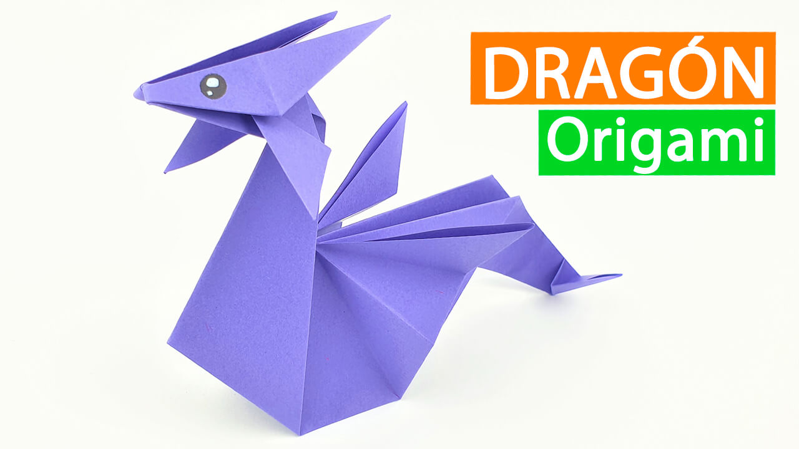
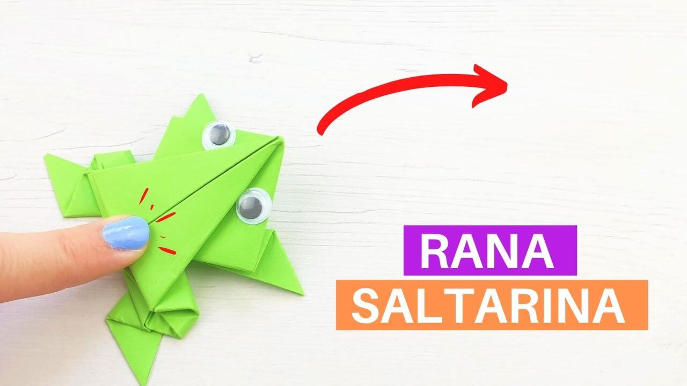
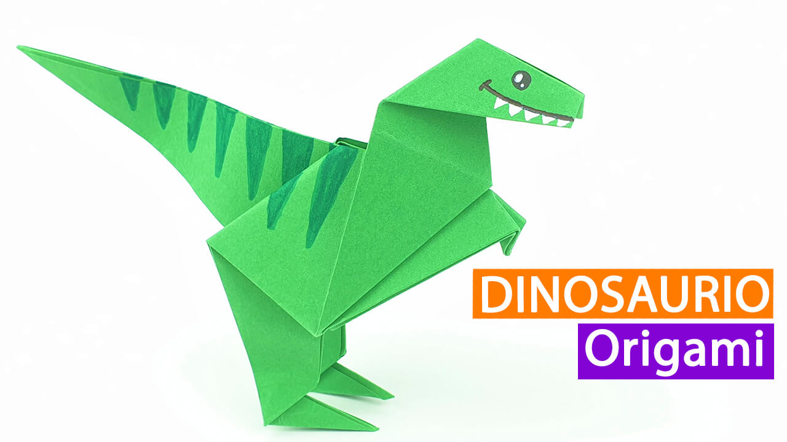
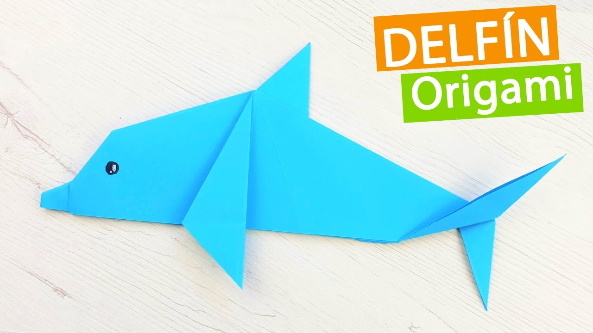

Diseños de Origami
Acerca de nosotros
Síguenos

Datos interesantes sobre los Dragones:
- No se han visto nunca dragones en América ni Australia
- Los dragones escupefuego pueden, como su nombre indica, escupir fuego
- Los humanos, más concretamente los magos, esclavizaban a los dragones para que cuidaran de sus tesoros

Datos interesantes sobre las Ranas:
- Las ranas cambian de piel una vez por semana
- No pueden vivir en el agua salada
- Tienen la capacidad de ver en diferentes direcciones al mismo tiempo

Datos interesantes sobre los Dinosaurios:
- Eran de colores vivos y variados
- La mayoría de los dinosaurios eran herbívoros.
- Se estima que podían llegar a vivir hasta 100 años

Datos interesantes sobre los Delfines:
- Cada delfín tiene un nombre único que lo diferencia de los otros
- Carecen del sentido del olfato
- Duermen con un ojo abierto